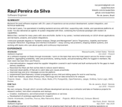

raulpe7eira
Passionate coder, and cycling enthusiast,
who loves being with the family
Raul Pereira da Silva

PDFDownload PDF2 pages · ATS-friendlySummary
Backend-focused software engineer with 20+ years of experience across product development, system integration, and technical leadership.
In the last 4 years, I’ve specialized in building backend services with Elixir, supporting web, mobile, and operational platforms at scale. I’ve also delivered an agentic AI system integrated with Elixir, combining the functional paradigm with modern AI capabilities.
Before that, I worked for many years with Java and Kotlin. Earlier in my career, I worked extensively on UI/UX-driven applications and led teams, projects, and system integrations.
I hold post-graduate degrees in "Systems Analysis, Design and Management" and in "Ergonomics, Usability and Human-Computer Interaction: Ergodesign and Interface Evaluation". I enjoy solving real problems, shipping reliable systems, and working with teams who care about quality and continuous improvement.
Experience

As a software engineer at iSeatz through Arionkoder, I work on the team that owns the hotel search service for Amex's travel platform: aggregating availability, rates and promotions, ranking results, and personalizing offers for logged-in members. My main stack has been Elixir and Phoenix.
- Internationalization: mapped what the supplier integration covered in each market and built workarounds for the gaps to meet delivery deadlines
- Reworked the Oban job that caches data to reduce search latency
- Improved observability of that job to catch data sync issues proactively
- Improved logs and error messages across the platform
- Implemented OpenTelemetry context propagation across child and sibling spans for end-to-end tracing
- Built new features, adjusted existing ones, fixed bugs and ran data extractions for analysis


My own company, through which I provide software development services as a contractor and take on freelance projects for research centers, mid-sized companies and startups.
- Creation, maintenance, and enhancement of applications or services
- Development of prototype applications for research


")
")

As a software engineer at CloudWalk, I was part of an amazing team that built JIM, an AI agent for banking operations on InfinitePay in Brazil and the US, using Elixir and the BEAM.
- Standardized observability across the agent with Prometheus and OpenTelemetry
- Supported the expansion to the US market
- Built an encrypted upload system for customer images, with access restricted by design
- Improved database performance
- Improved the LiveView backoffice
- Implemented Kafka integrations and new service-to-service authentication methods
- Built agent tools in collaboration with other teams and contributed to the MCP integration we built


As a backend engineer at Coverflex, an employee benefits platform in Portugal, Italy and Spain, I supported the web, mobile and backoffice applications using Elixir and Phoenix.
- Automated invoice processing for childcare services
- Implemented dynamic pricing adjustments for cards
- Introduced dedicated IBAN for all companies
- Participated in the Santander kick-off and developed exclusive features
- Expanded support for multiple insurances
- Streamlined the employee re-onboarding process
- Delivered improvements to the Apple marketplace
- Participated in the Spanish market kick-off
- Developed and optimized various bulk operations features

As a tech coordinator at Jaya Tech, I supported multiple teams delivering microservices-based solutions for clients such as PayGo, Swap, Vagas, CERC and Mercado Livre.
- Mentored and developed new tech leads
- Hired and set up new teams
- Focused on each person's professional growth, aiming to make the teams fully autonomous


As a tech lead at Jaya Tech, I led the team behind microservices-based solutions for C6 Bank's mobile apps and back-office systems, while also working as a backend developer and solutions analyst.
- Mentored each team member's professional growth, aiming to make the team fully autonomous
- Worked hands-on as a backend developer, mainly with Kotlin

As a consultant at Jaya Tech, I worked as a backend developer and solutions analyst on microservices-based solutions for mobile apps and back-office systems, for clients such as Guiabolso and C6 Bank.
 acquired
acquired
As a fullstack developer at Supply Midia, I developed and maintained new modules for an EDI system that integrates companies with their banks, using Java, JSF/PrimeFaces and PostgreSQL. I also built the landing page for one of the company's new products, using WordPress.

As a fullstack developer at Sonda, I provided development services to BR Distribuidora, using Java on the backend and AngularJS on the frontend. I was responsible for the initial production release of a sales force portal intended for rollout across all of its gas stations.
 acquired
acquired
As a frontend developer at Meu Patrocínio, I worked on the startup's mobile app for Android and iOS, using Angular, TypeScript and NativeScript.

As a senior system analyst at BRQ, I kept working with Petrobras on desktop and web projects, which I had started at Atos, and supported the BPM team. After that contract ended, I helped deliver projects for Bradesco Seguros.


As a senior system analyst at Atos, I worked for Petrobras as a process analyst, systems analyst and web and desktop developer. This is where I started working with agile methods.
As a requirements analyst at BRQ, I worked for IBM on a project for Embratel, specifying functional and non-functional requirements through use cases.


As a mid-level system analyst at Tecgraf/PUC-Rio, I developed geoprocessing applications built on INPE's TerraLib.
- Built Java Swing interfaces and components for a bus monitoring system, including map display, printing, processing and editing
- Developed communication services between Java Swing and C/C++ using CORBA and JNI
- Created message notification services with JMS and RMI
 acquired
acquired
 acquired
acquiredAs a junior system analyst at Drive, I developed and maintained a fund management system for banks, and built communication services between C++ and Java using CORBA. The systems were distributed and supported the multiple databases used by clients, such as Sybase, SQL Server and Oracle.

As an intern at Caixa, I updated the company intranet, worked with Access databases and Excel spreadsheets, prepared documents for the telemarketing department and used Caixa's internal financial applications.